Manuel : ce que tu veux faire
StoneKiller
Version 0.39.024 octobre 2026
Une fiche par chose que tu veux faire : de quoi tu as besoin, pourquoi, et le chemin dans StoneKiller, en une page ou deux. Pour le détail de chaque page de l'appli, chaque fiche renvoie au guide.
Comment lire une fiche
- Le récit : pour qui, ce dont tu as besoin et pourquoi. Si tu t'y reconnais, c'est la bonne fiche.
- Le chemin : les étapes dans l'appli, avec le nom des boutons en gras, tels que tu les vois à l'écran.
- Sur papier, dans certaines fiches : le même geste sans l'appli (une feuille imprimée et son QR code, des cases cochées lues en photo).
- Ce qui aide : quelques astuces pour que ça tienne dans la durée.
- Pour aller plus loin : les chapitres du guide qui détaillent chaque page, avec leur lien.
Les éditions
- StoneKiller : l'élève, le batteur qui travaille seul.
- Pro : l'atelier pro (compositeur, pistes), jouer avec une vidéo ; badge Pro.
- Teach : le prof, avec les cours en direct, le registre et le planning des élèves ; badge Teach.
Sommaire
- 01Je m'entraîne un peu chaque jour00
- 02J'apprends un groove et je le garde00
- 03Je travaille une chanson00
- 04Je me regarde jouer pour corriger ma posture00
- 05Je filme et je monte une cover00
- 06Je suis le cours de mon prof00
- 07Je prépare et je donne mon cours00
- 08Je gère mes élèves et mon planning00
- 09J'imprime des feuilles d'exercices00
- 10Je comprends et je joue les polyrythmes00
- 11J'organise l'appli à ma façon00
- 12Je partage et je sauvegarde mon travail00
- 13Je relie mes élèves à mon appli00
- 14Je donne un cours sans Wi-Fi00
- 15Je donne des devoirs, sur papier ou dans l'appli00
- 16Je fais le bilan après le cours00
- 17Je construis ma séance avec une routine00
Fiche 01Élève · StoneKiller
Je m'entraîne un peu chaque jour
Le chemin
- Dans une leçon, + Programme sous un exercice l'ajoute à ton programme, avec ses tempos (Toute la leçon au programme les ajoute tous).
- Chaque jour, ouvre le Programme (catégorie Exercices) : l'exercice du haut est celui du jour, le lecteur démarre à ton Tempo actuel.
- Joue-le, puis réponds à « Comment c'était ? » : la note règle le prochain rappel et le prochain tempo (sous chaque bouton, l'appli dit ce qui va se passer).
- Passe à l'exercice suivant ; quand le compteur à travailler aujourd'hui tombe à zéro, la séance est finie.
- Pour un échauffement ou un exercice sans partition, le Métronome : un clic, un groove, ou la roue rythmique, en plein écran si tu joues loin de l'écran.

Ce qui aide
- Sois honnête dans ta note : Bon fait monter le tempo par petits paliers, ce qui résiste revient vite, un peu plus lentement.
- Ce qui est acquis s'espace tout seul et finit dans Maîtrisés : il revient de temps en temps vérifier que ça tient.
- Ma progression, dans le menu ⋯ du programme, montre ce que disent tes notes sur la durée.
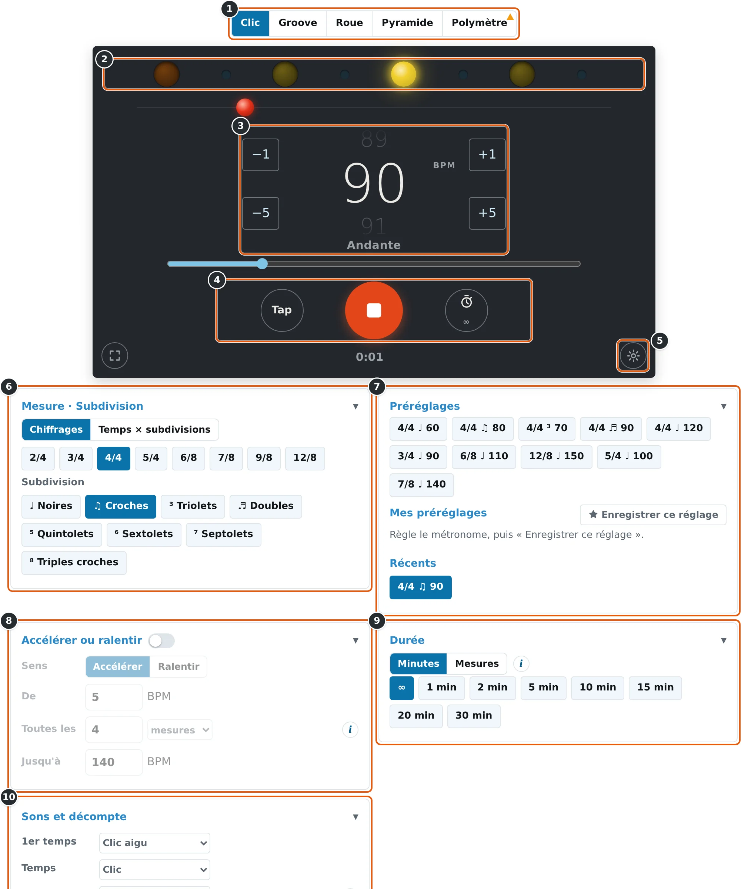
Pour aller plus loin
- Le programme d'entraînement : les tempos, les rappels, les exercices en pause.
- Le métronome : le clic, le groove, la roue, la pyramide, le plein écran.
- L'évaluation : noter un exercice en détail, et ta progression.
Fiche 02Élève · StoneKiller
J'apprends un groove et je le garde
Le chemin
- Ouvre Leçons : thèmes, leçons, parties, exercices. Pour aller droit à un exercice, le Sommaire du menu a un champ de recherche (un nom, « paradiddle », « 6/8 »).
- Joue l'exercice dans sa leçon. Une leçon fournie ne se modifie pas : Dupliquer pour modifier en fait ta version. Enchaîner joue plusieurs exercices ou toutes les variantes à la suite, sans que tu touches l'appli.
- Pour écrire ta variante, ouvre l'Atelier, Groove direct, puis, dans ⋯, Partir d'un exercice ou en enchaîner plusieurs : l'exercice sert de point de départ, tu poses et tu effaces les notes dans la grille.
- ★ Enregistrer… ouvre Enregistrer sous : donne un nom, puis choisis Mes grooves (une liste, ou Nouvelle liste…) ou Une leçon.
- Dans l'éditeur d'une de tes leçons, Créer avec l'atelier ouvre l'atelier relié à la leçon : le bouton au nom de la leçon (Ajouter à « … ») y envoie ton exercice.
- Retrouve-le dans Mes grooves : Tous mes grooves, Favoris et tes listes. Un groove se joue, se modifie, s'ajoute au programme.
- De temps en temps, Sauvegarde complète : un fichier
.skbackupà garder où tu veux. Sur un autre appareil, Restaurer.


Ce qui aide
- Une liste de Mes grooves se travaille en Entraînement : chaque groove est joué plusieurs fois avant le suivant, les mêmes réglages que Enchaîner dans une leçon.
- Un exercice a trois tempos, Départ, Stable et Cible : le programme propose Maîtrisé quand le tempo stable est atteint.
- Restaurer fusionne le fichier avec ce qui est déjà là : rien n'est effacé. Les préférences de l'appareil (nom affiché, décompte, affichage) se règlent à nouveau dans Réglages.
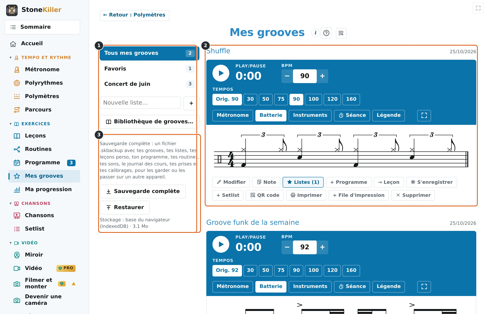
Pour aller plus loin
- Le livre de leçons : les origines, l'affichage, les variantes de variantes, les tempos.
- Mes grooves, sauvegarde et impression : ce que contient la sauvegarde, la fenêtre d'import.
- L'atelier : Groove direct, les briques, Ostinato, Enregistrer.
Fiche 03Élève · StoneKiller
Je travaille une chanson
Le chemin
- Dans Chansons, Nouvelle étude : colle le lien d'une vidéo (YouTube, Vimeo, SoundCloud), dont le titre et l'artiste se remplissent seuls, ou choisis un fichier de ton appareil. Pour essayer sans rien préparer : Essayer avec un exemple.
- Lance la chanson et appuie sur Mesure 1 ici (ou la touche 1) au premier temps de la première mesure, puis sur Section ici (ou la touche M) au début de chaque partie : intro, couplet, refrain…
- Écris la partition là où tu en as besoin : Écrire ouvre l'éditeur de grille sur un bloc, Taper te laisse jouer par-dessus la chanson. Rien n'oblige à tout écrire : sur un trou, tu peux travailler quand même.
- Isole le passage qui coince : In et Out posent la zone, Boucle la répète, le menu de vitesse ralentit. Dans Écoute, Batterie seule fait jouer la partition sans la chanson, Clic seul vérifie que tu tiens le tempo.
- Dans l'onglet Exercices, Ajouter un exercice tire des mesures de la chanson : un groove, une version simplifiée, une boucle au ralenti… Ceux qui ont une partition s'ajoutent au programme (Programme).
- Quand c'est prêt, Jouer ne garde que la vidéo, les sections, le lecteur et la partition ; Plein écran enchaîne les passages, les répète et laisse une pause entre deux.


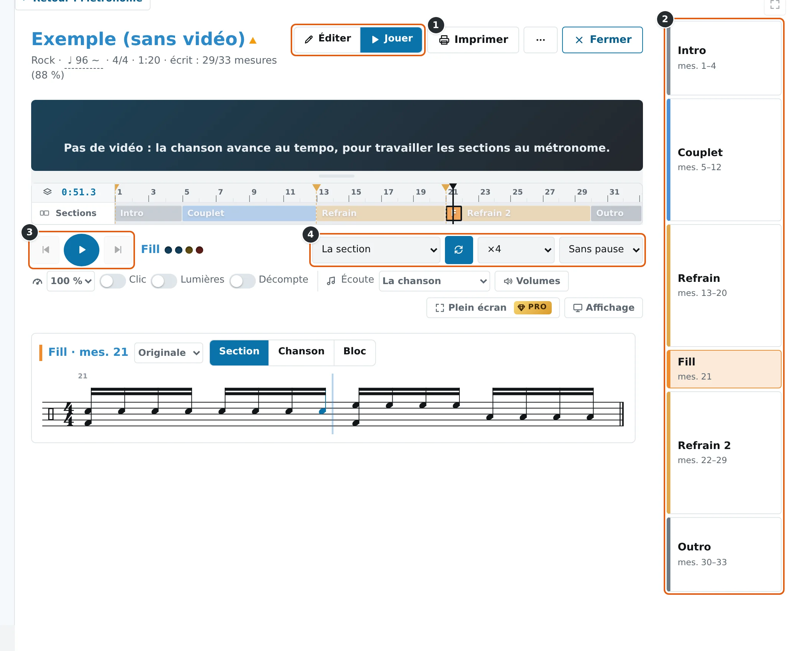
Ce qui aide
- Avec un fichier, tu ralentis de 50 à 125 % sans changer la hauteur et tu vois l'onde ; YouTube ralentit de 25 à 200 %, par paliers.
- Si la partition dérive, arrête-toi sur le début d'une mesure qui tombe à côté et appuie sur « Mesure N ici » : une ancre ne bouge plus. Deux ou trois, sur un coup de cymbale ou l'entrée d'un refrain, suffisent souvent.
- StoneKiller garde seulement le lien (ou ton fichier) et ce que tu écris. Rien ne part vers YouTube, Vimeo ou SoundCloud tant que tu n'as pas activé ce service : à chaque lien, la fenêtre propose « Activer » suivi du site, ou Continuer sans.
- Même principe que pour un exercice : un passage propre à 60 BPM t'apprend plus qu'un passage approximatif à 100.
Pour aller plus loin
- Caler la partition sur la musique : la mesure 1, les ancres, le tempo tapé.
- Jouer un exercice : le lecteur, le tempo, couper des instruments, les séances.
Fiche 04Élève · StoneKiller
Je me regarde jouer pour corriger ma posture
Le chemin
- Ouvre le Miroir (catégorie Exercices), puis Allumer la caméra : celle de l'appareil. Rien n'est enregistré sans toi : les images restent en mémoire quelques secondes et disparaissent quand tu quittes la page.
- Ajoute un angle avec Un téléphone comme caméra…. Sur le téléphone, avec l'appli et sur le même Wi-Fi, Devenir une caméra (catégorie Vidéo) la trouve d'elle-même, ou scanne le QR code. Pose-le de côté ou derrière toi.
- Règle le Différé : Direct, ou l'image d'il y a 3, 5, 10 ou 20 secondes. Joue un passage, puis regarde-toi le rejouer, sans t'arrêter.
- Avec les Repères (le milieu, les tiers), juge un dos droit, des épaules à niveau. Tire sur une vue pour poser ta propre ligne (le dos, la cuisse, l'avant-bras) : son angle s'affiche et elle reste d'une séance à l'autre.
- Figer arrête toutes les vues au même instant ; le curseur parcourt les 30 dernières secondes. Reprendre revient au direct.
- Pour garder une séance, Enregistrer filme chaque vue, Arrêter finit les fichiers. Dans l'appli Windows ou Android, tu les retrouves dans Mes vidéos (catégorie Vidéo) : lire, renommer, montrer dans le dossier, supprimer.
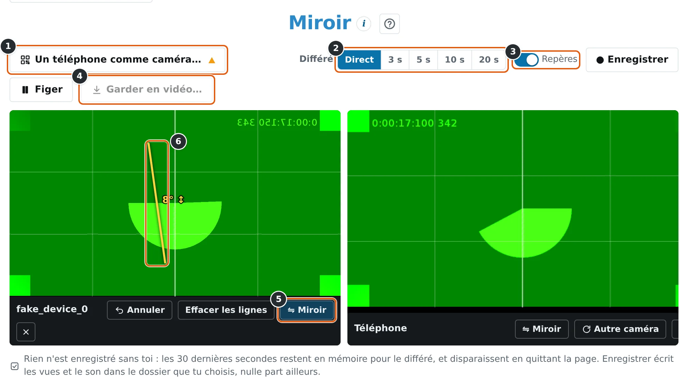

Ce qui aide
- Maj en traçant verrouille l'angle sur 0°, 30°, 45°, 60° ou 90° ; Annuler (Ctrl+Z) reprend un geste à la fois, Effacer les lignes les retire toutes.
- Garder en vidéo… fait des secondes figées une vidéo, vues côte à côte, enregistrée où tu veux : seulement si tu le demandes.
- Un double-clic sur une vue la met en plein écran, pour la voir depuis la batterie ; Miroir, sur une vue, la retourne comme un miroir (d'office pour la caméra qui te fait face).
- Sur le téléphone, la page de la caméra dit « Image envoyée à … » : pose-le, écran allumé, et joue. L'image va directement d'un appareil à l'autre, sans passer par Internet.
Pour aller plus loin
- Le miroir : le différé, les lignes de posture, l'enregistrement.
- Mes vidéos : le dossier des vidéos, lire, renommer, supprimer.
Fiche 05Cover · Pro
Je filme et je monte une cover
Le chemin
- Ouvre Filmer et monter (catégorie Vidéo) : filmer, importer les autres caméras et le son de la STAN, monter, préparer pour DaVinci Resolve. Sur ton étude de chanson, Filmer, Importer des fichiers et Monter ouvrent la bonne fenêtre.
- Filmer ouvre la fenêtre du maître, l'appli qui joue la chanson (le menu ⋯ de l'étude y mène aussi : Capture). Ajouter une caméra affiche un QR code ; sur chaque téléphone avec l'appli, sur le même Wi-Fi, Devenir une caméra.
- Tout enregistrer : un décompte, puis toutes les caméras démarrent au même instant, le repère sonore sonne et la chanson part. Arrêter termine la prise.
- Chaque prise revient calée sur la chanson : Garder en fait un angle de l'étude, Écarter l'efface.
- Une GoPro ou un appareil photo démarrés à la main, le WAV de ta STAN : Importer des fichiers, chacun est calé par les repères, ou au son de la chanson.
- Ouvre Montage dans le menu ⋯ : pendant la lecture, les touches 1 à 9 coupent et montrent cette caméra, comme le multicam de DaVinci Resolve.
- Exporter le mix donne la vidéo finie, notes et paroles posées dessus ; Préparer pour DaVinci… prépare un dossier pour finir les effets et l'étalonnage dans Resolve.
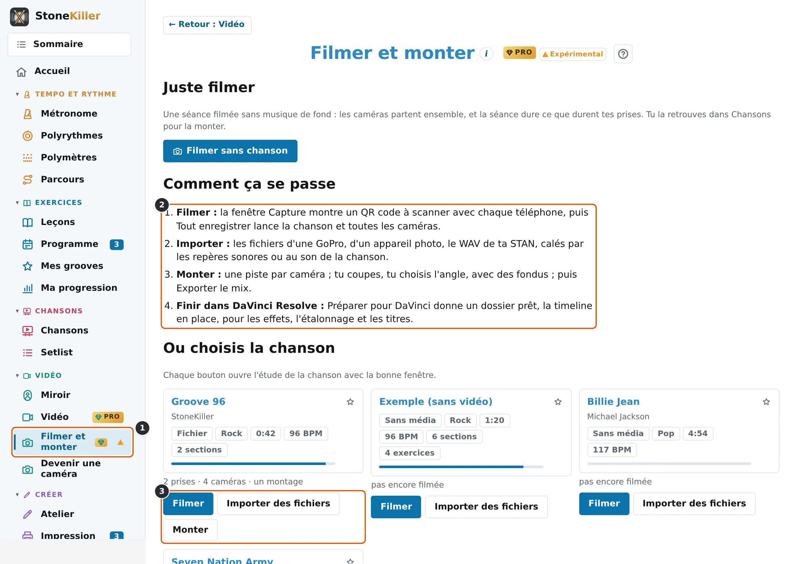

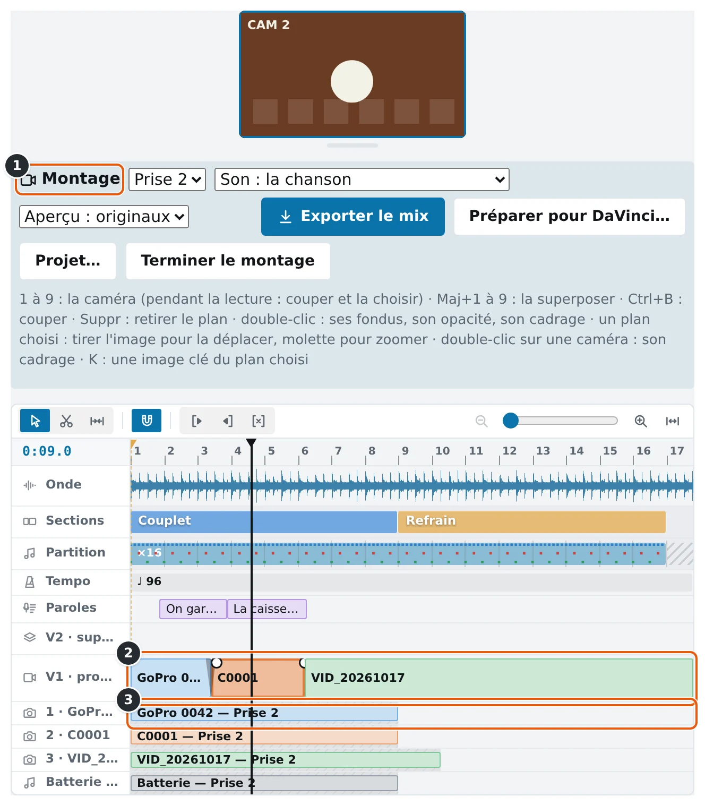
Ce qui aide
- Le maître joue deux Repères sonores par son haut-parleur, avant la chanson et après l'arrêt : ils calent tout ce qui enregistre dans la pièce, même une caméra ou une STAN que l'appli ne démarre pas. Avec un casque, laisse la sortie sur le haut-parleur pendant le décompte.
- Cadrage envoie à chaque téléphone quatre images par seconde, en grand : tu règles toutes les caméras sans courir de l'une à l'autre.
- Si la lecture saccade avec plusieurs caméras en 4K, Aperçu lit une copie légère (1/2 ou 1/4) ; l'export prend toujours les originaux.
- Les vidéos restent sur l'appareil : ni le fichier d'étude ni la sauvegarde ne les emportent ; un projet de montage enregistré, si.
Pour aller plus loin
- Filmer sous plusieurs angles : Capture, un iPhone sans l'appli, une GoPro, les repères sonores.
- Mes vidéos : lire, renommer, retrouver tes vidéos.
- Finir dans DaVinci Resolve : le contenu du dossier, la timeline.
Fiche 06Élève · StoneKiller
Je suis le cours de mon prof
Le chemin
- Le prof démarre le cours et montre un QR code. Avec l'appli, le cours apparaît tout seul : Rejoindre. Sans appli, vise le QR code avec l'appareil photo, touche le lien, donne ton nom, puis Rejoindre.
- Pendant le cours, la partition s'affiche en grand et suit le prof : tes mains sont libres. Le bouton ■ te laisse explorer seul, Revenir au prof te remet sur ce qu'il montre.
- À la fin, les devoirs entrent dans ton Programme, avec les tempos du prof et son message sous la partition. Le cours est dans ton Journal des cours.
- Chaque jour, joue l'exercice du haut du Programme et réponds à « Comment c'était ? » : la note règle le prochain rappel et le prochain tempo.
- Avant le prochain cours, Envoyer mon travail au prof (menu ⋯ du programme) lui donne ce que tu as travaillé et noté depuis ton dernier envoi : un QR code à lui montrer, ou un fichier
.skreport.
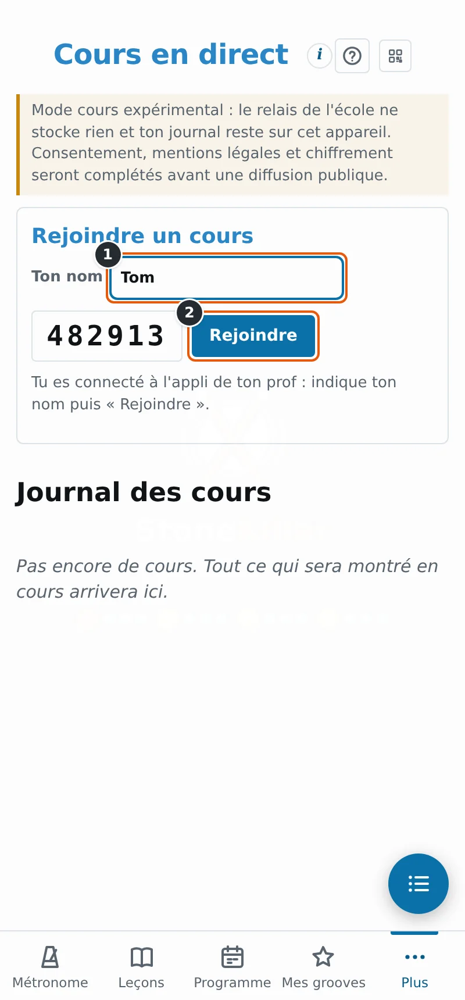
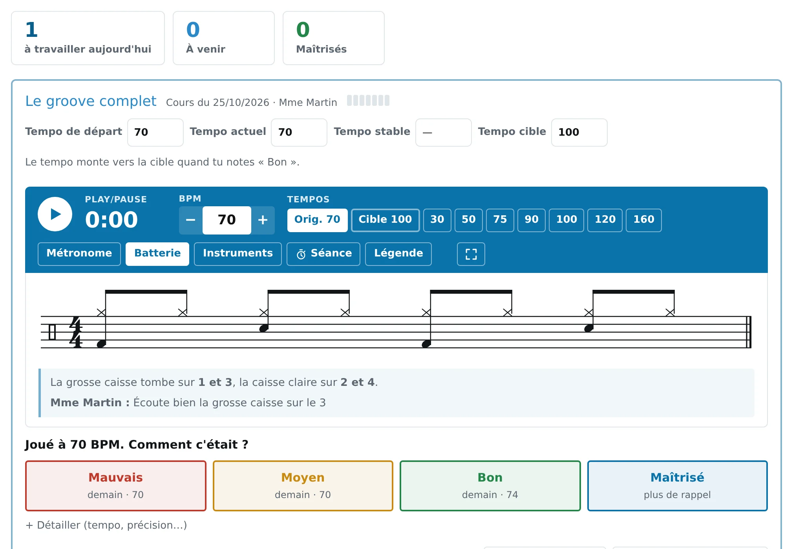
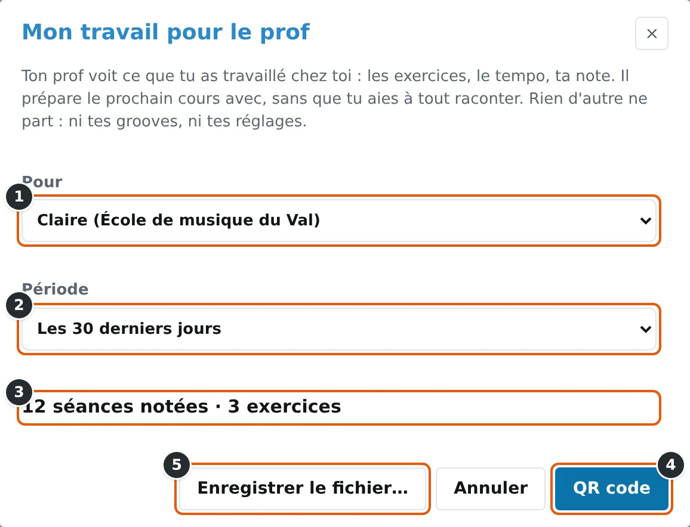
Sur papier
- Une feuille avec un QR code ? Scanner un QR code (l'icône en haut du Programme) met ses exercices dans ton programme, et la séance dans ton journal.
- Si elle a des cases, coche-les au stylo pendant la semaine, puis Mes cases (photo) (menu ⋯ du programme) les lit ; Enregistrer mes notes les reporte.
- Sans appli, la feuille se suffit : remplis ses cases et montre-la à ton prof au cours suivant.
Ce qui aide
- Son sur cet appareil est désactivé au départ : dans la même pièce, le son vient de l'appareil du prof (sinon, écho). Active-le à distance ou au casque.
- Sortir du plein écran met la projection en pause (l'exercice est noté Interrompu dans ton journal) ; Reprendre la projection te ramène au prof. Seul Quitter fait sortir du cours.
- Sans appli, la page garde ses données dans le navigateur du téléphone : pour un travail suivi, installe l'appli, ou fais une Sauvegarde complète.
- Pour que ton prof te reconnaisse à chaque cours, relie ton appli à lui une fois : Scanner un QR code, puis Relier.
Pour aller plus loin
- Cours en direct : rejoindre, le son, la pause, après le cours.
- Le programme d'entraînement : les notes, les devoirs, les feuilles du prof.
- Mes grooves, sauvegarde et impression : la sauvegarde, les feuilles imprimées.
Fiche 07Prof · Teach
Je prépare et je donne mon cours
Le chemin
- Avant le cours, range tes exercices dans la Setlist de la classe : Setlist sur un exercice, une partie ou une leçon demande où l'ajouter. La séance est la setlist de la prochaine séance du planning.
- Démarrer le cours : un code à 6 chiffres et un QR code s'affichent. Les élèves rejoignent avec leur appli ou en scannant le QR code, sans rien installer. Sur Windows, autorise l'appli sur les réseaux privés.
- Projeter… : cherche un exercice, écoute l'aperçu (rien n'est envoyé), puis Projeter. Dans la setlist, Suivant et Précédent changent d'exercice.
- Le lecteur pilote les élèves : lecture, arrêt et tempo sont suivis chez eux. Message affiche une consigne ; Composer en direct construit un groove sous leurs yeux.
- Le panneau Classe montre une ligne par élève : il suit, explore, est en pause. Réussi et À revoir se marquent d'un geste, tes notes restent chez toi.
- Donner en devoir : le tempo de départ et le tempo cible, puis l'exercice projeté devient un devoir.
- Terminer le cours : les devoirs partent dans le Programme des élèves et le Bilan s'ouvre. Corrige, puis Mettre à jour le registre.
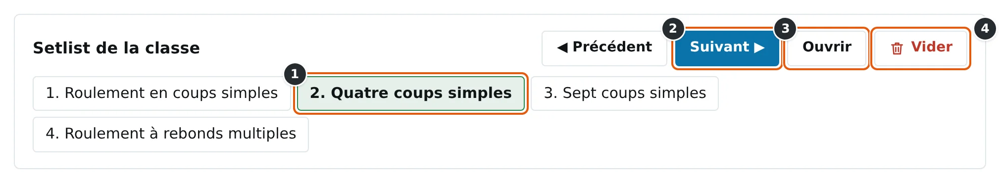
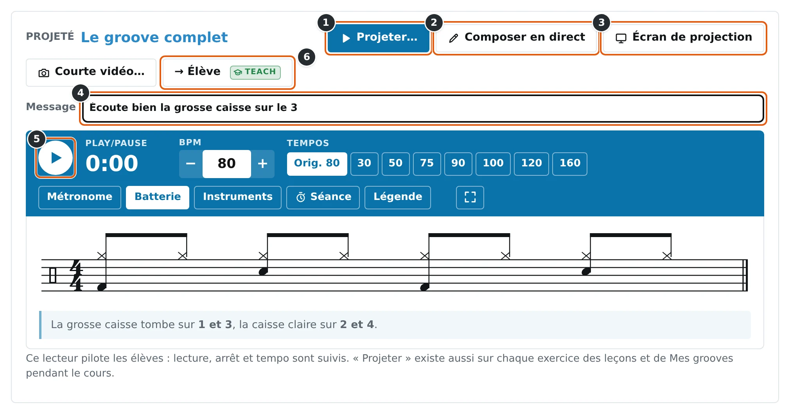

Sur papier
- Pas d'écran, ou des élèves sans appareil : Imprimer, dans le menu ⋯ de la page de la setlist, sort ses exercices cochés dans l'ordre, avec leurs partitions.
- Pour les devoirs, une feuille composée d'avance (page Impression), avec QR code pour l'appli de l'élève et Cases pour l'élève.
- Après un cours particulier, Imprimer, en haut de la fiche de l'élève, prépare Ses leçons.
Ce qui aide
- Pas de Wi-Fi dans la salle ? Wi-Fi du cours : l'appli Teach sur Android en crée un, ou tu indiques celui d'un partage de connexion ou d'un routeur.
- Écran de projection ouvre une deuxième fenêtre avec la partition en grand, pour un vidéoprojecteur.
- Un exercice projeté pendant la pause d'un élève est noté Non fait pour lui dans le journal du cours.
Pour aller plus loin
- Cours en direct : démarrer, projeter, la classe, les devoirs, le bilan.
- Un cours sans Wi-Fi : un téléphone crée le Wi-Fi de la salle.
- La Setlist : la setlist de la classe et celle de la séance.
Fiche 08Prof · Teach
Je gère mes élèves et mon planning
Le chemin
- Dans Élèves, Nouvel élève crée une fiche ; ceux qui ont rejoint un de tes cours en direct sont sous « Vus en cours, pas encore dans le registre » : un clic les ajoute. Rien n'est gardé avant Enregistrer.
- Mon école décrit une fois les lieux, les salles et les profs ; le Calendrier… note vacances, jours fériés et jours bloqués, que les cours réguliers respectent.
- Dans la fiche, onglet Prochains cours, Cours régulier crée un cours seul ou de groupe. Proposer des créneaux croise les heures du prof, les disponibilités et les salles : tu choisis.
- Le Planning montre la semaine : le cours prévu, puis Présent, Absent ou Annuler le cours ; un cours se déplace en le glissant.
- En cours particulier, Démarrer la séance ouvre une fenêtre pour cet élève seul ; Terminer la séance range tout dans sa fiche, et À travailler garde ce qui reste.
- Crédits… : tu notes les achats (+10 pour un forfait de dix cours) ; chaque cours fait en consomme, et ce qui reste s'affiche partout.
- En fin de trimestre, l'onglet Historique montre Son année : les cours faits, la présence, les crédits restants.
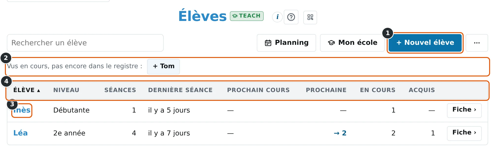

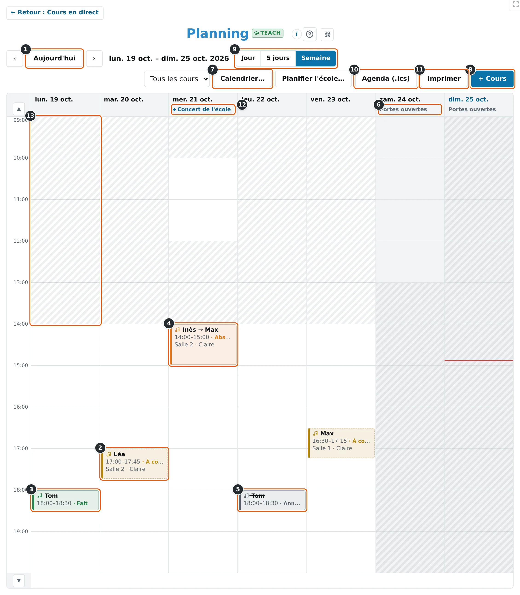
Sur papier
- Imprimer, dans le menu ⋯ de la liste, sort le registre en tableau : une ligne par élève actif.
- Sur la fiche d'un élève, Imprimer prépare sa Fiche de l'élève, Ses leçons ou l'Aperçu de l'année (aussi en CSV ou XLSX), à donner ou à classer.
- Dans le Planning, Imprimer sort les jours affichés (Jour, 5 jours ou Semaine), à l'en-tête de l'école.
Ce qui aide
- Si Alice est absente et qu'un autre élève prend son créneau (Remplacer par…), son absence reste notée ; ce qui a été travaillé va dans la fiche de celui qui était là.
- Le motif d'une absence dit ce qui s'est passé, jamais ce qui arrange : pour ne pas décompter un cours, Ne compte pas dans Crédits comptés.
- Un cours régulier d'un jour fermé est grisé, jamais effacé : Cours quand même le maintient.
- Agenda (.ics) envoie le planning vers ton agenda ; Exporter et Importer (menu ⋯ de la liste) emportent le registre seul (
.skroster).
Pour aller plus loin
- La fiche d'un élève : ses cours, l'historique, les compétences.
- Le planning : un jour, un cours, l'agenda.
- Les crédits : corriger, reporter.
- Ton école : lieux, salles, profs, calendrier.
Fiche 09Tous · StoneKiller
J'imprime des feuilles d'exercices
Le chemin
- Pour une seule partie, Imprimer à côté de son titre : l'aperçu s'ouvre d'abord, avec ses réglages. Le même bouton existe sur un exercice, en haut d'une leçon (Imprimer la leçon) et pour un thème (Imprimer tout le thème).
- Pour réunir des exercices de plusieurs endroits, ajoute-les à la File d'impression (bouton sous chaque exercice), puis ouvre la page Impression.
- Compose la feuille : Titre, Texte libre, Saut de page ; les flèches ↑ ↓ rangent les éléments. Mesures par ligne fixe combien de mesures tient chaque ligne ; Selon la place en met autant qu'il en tient.
- Choisis les Variantes à imprimer : Aucune, Celles de la leçon ou La leçon et les miennes, et leur Placement des variantes.
- Règle la Mise en page : Normale, Compacte ou 2 colonnes. L'Aperçu en Pages montre où tombe chaque exercice avant d'imprimer.
- Pour un élève, ajoute les Cases pour l'élève (les Jours travaillés, Mon tempo, la note) et, si tu veux, le QR code pour l'appli de l'élève.
- Imprimer ouvre l'aperçu du système : choisis l'imprimante ou « Enregistrer au format PDF ».
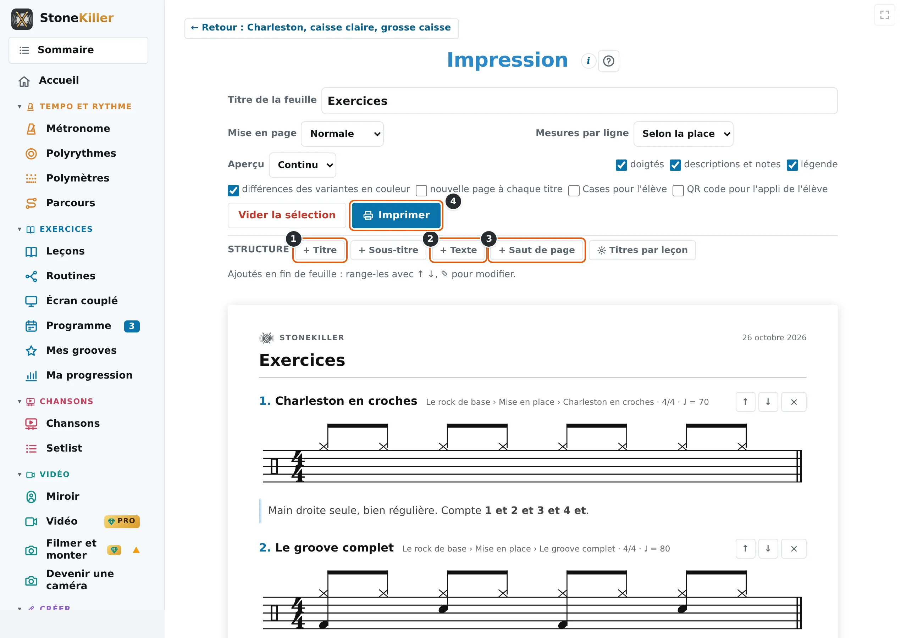

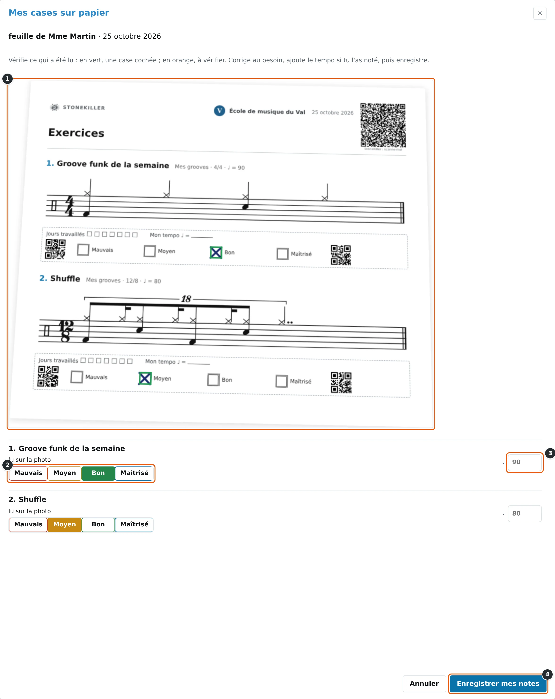
Ce qui aide
- Avec le QR code, l'élève scanne la feuille (Scanner un QR code) : ses exercices rejoignent son programme, la séance son journal. Il coche ses cases au stylo, puis Mes cases (photo) les lit et les reporte.
- La légende, en fin de feuille, n'explique que les notes écrites sur elle. La feuille s'imprime toujours sur fond blanc, même en thème sombre.
- Si le navigateur ajoute sa propre ligne (adresse, heure), décoche « En-têtes et pieds de page » dans sa fenêtre d'impression.
- Dans l'appli Teach, le nom et le logo de ton école entrent dans le cartouche.
Pour aller plus loin
- Mes grooves, sauvegarde et impression : la file, les options, l'aperçu en pages.
- Le QR code de la feuille : ce que la feuille porte, les cases lues sur photo.
Fiche 10Élève · StoneKiller
Je comprends et je joue les polyrythmes
Le chemin
- Ouvre Polyrythmes. Pour chaque voix, choisis le nombre de coups du cycle (2 à 9) et l'instrument. La bande étale le cycle sur une grille commune de tics, le cercle le montre comme une horloge.
- Écouter : Toutes les voix, ou une voix seule (A, B…) pour l'entendre comme modèle. Baisse le tempo à 40, coche les tics et compte-les à voix haute (6 tics en 3:2), sans jouer.
- En 3:2, joue B (la grosse caisse) au pied, puis A (la ride) à la main. Apprends le rythme résultant (2 1 1 2 en 3:2) d'une seule main, sur un seul instrument, puis répartis-le entre les deux mains ou entre main et pied.
- Décoche les tics, monte le tempo par paliers, puis change d'instruments.
- Au Métronome, le mode Roue fait tourner le rapport avec le clic. Commence en Fixe, à 3:2, lentement ; passe en Pyramide quand chaque rapport du parcours est en place.
- Pour les figures qui décalent (un groupe de 3, 5 ou 7 doubles croches), le mode Polymètre du métronome (expérimental) et la page Polymètres : chaque membre joue sa propre boucle sur une mesure qui ne bouge pas.
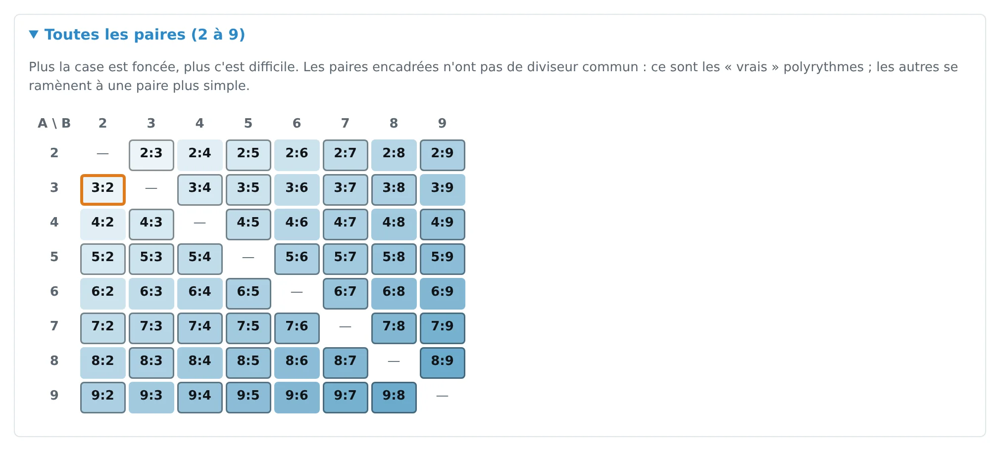


Ce qui aide
- Dans Phrases mémo, Afficher les syllabes met sous la bande une phrase dont chaque syllabe tombe sur un coup du rythme résultant : « nice cup of tea » en 3:2, « pass the golden butter » en 4:3.
- Toutes les paires (2 à 9) montre d'un coup d'œil la difficulté : plus la case est foncée, plus la paire est difficile. 6:4 revient à jouer 3:2 deux fois : commence par la version simple.
- À 3 ou 4 voix, maîtrise d'abord chaque paire (A:B, A:C, B:C), puis ajoute une voix à la fois.
- Dans Allure du métronome, Aussi dans la page Polyrythmes remplace le cercle par la roue du métronome : un seul dessin à apprendre.
Pour aller plus loin
- Polyrythmes et polymètres : la grille commune, le rythme résultant, la méthode, le Parcours.
- Le métronome : la roue, la pyramide, le polymètre, les phrases mémo.
Fiche 11Tous · StoneKiller
J'organise l'appli à ma façon
Le chemin
- Au premier lancement, la fenêtre de bienvenue demande ce que tu viens faire : Je m'entraîne, J'apprends seul, Je fais des covers (musique et vidéo) ou J'enseigne (édition Teach). Cette réponse est un profil : il règle le mode, l'ordre du menu, la barre du bas sur téléphone et la page de départ. Commencer l'applique.
- Dans Réglages, Mode choisit Simple (l'accueil « Je veux… » et six catégories) ou Complet (toutes les pages dans le menu). Le changement est immédiat.
- Les catégories sont Tempo et rythme, Exercices, Chansons, Vidéo, Créer et Cours. Le nom d'une catégorie ouvre son accueil : Reprendre ce que tu y faisais, ses tuiles, et Toutes les pages, même celles que tu as cachées du menu.
- Menu et accueil (dans Réglages) règle l'ordre et la couleur des catégories, les tuiles de l'accueil, les pages à montrer (Dans le menu), celles qu'on range sous Autres pages (Replié), et la Barre du bas du téléphone. L'Aperçu suit chaque changement.
- Écran de départ choisit la page que l'appli ouvre au lancement ; Enregistrer comme profil… garde ta disposition sous un nom, dans Mes profils.
- Toujours dans Réglages : Ton nom (celui que voit le prof pendant les cours), la Langue (français, anglais ou allemand), le Décompte, et Configurer les sons de la batterie.

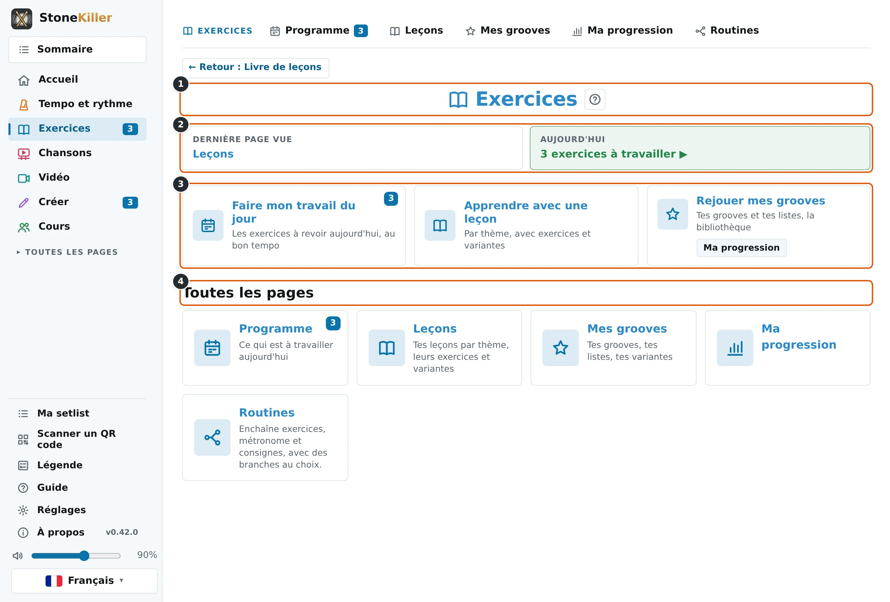

Ce qui aide
- Une page cachée reste accessible par ses liens, dans Toutes les pages et sur l'accueil de sa catégorie. Tout remettre comme à l'origine revient au menu et à l'accueil de l'appli.
- Si ta disposition ne correspond à aucun profil, l'appli la garde d'abord comme profil à toi avant d'en appliquer un autre : rien ne se perd.
- Me redemander au prochain démarrage fait revenir la question à chaque lancement, utile sur un appareil partagé.
- L'ancienne présentation, avec les onglets en haut, reste disponible : Interface, puis l'option Classique.
Pour aller plus loin
- Se repérer dans l'appli : simple ou complet, les accueils, le menu, le téléphone.
- Réglages, sons et données : le profil, les sons de la batterie, le retard Bluetooth, tes données.
Fiche 12Tous · StoneKiller
Je partage et je sauvegarde mon travail
Le chemin
- Un groove que tu as écrit tient souvent dans un QR code. Dans le menu ⋯ d'un groove, QR code l'affiche en grand ; l'autre le scanne avec Scanner un QR code et le garde dans ses grooves, avec ton nom comme auteur.
- Une liste de Mes grooves se partage avec Partager (un fichier
.skgroove) ; des leçons, avec Exporter sur leur carte ou Exporter mes leçons (un fichier.sklessons). Envoie le fichier comme tu veux. - Pour ouvrir un fichier reçu : double-clic avec l'appli Windows, glisser sur la fenêtre, ou un bouton d'import (Restaurer, Importer des leçons). Sur Android, « Ouvrir avec StoneKiller ». Rien ne change avant ta confirmation.
- Pour ce qui diffère de ton travail, choisis En cas de différence : Garder le plus récent, Prendre celui du fichier, Garder le mien ou Garder les deux (copie). « Choisir une par une » détaille chaque cas. Un import ne supprime jamais rien.
- Ton prof peut te donner des exercices pour toi seul (un fichier
.skpersonalou un QR code). L'appli montre de qui ils viennent et ce que tu peux en faire ; Garder les range dans ton journal. - Dans Mes grooves, Sauvegarde complète crée un fichier
.skbackupavec tout ton travail. Garde-le (clé USB, cloud, e-mail). Sur le nouvel appareil : Restaurer.


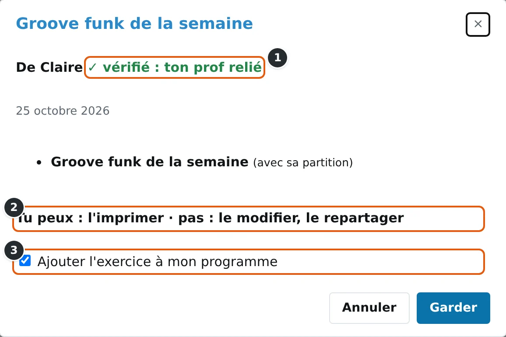
Ce qui aide
- Seul ce que tu as fait toi-même se partage par QR code : un exercice des leçons fournies avec l'appli, non. Un groove trop long pour un QR code se partage en fichier.
- Restaurer fusionne le fichier avec ce qui est déjà là. Les préférences de l'appareil (nom, Wi-Fi du cours, décompte, affichage) restent à régler dans Réglages.
- Fais une Sauvegarde complète avant de désinstaller l'appli ou de changer d'appareil : les données ne se synchronisent avec aucun autre appareil, et désinstaller peut les effacer.
- Sur Android, Sauvegarde complète ouvre « Enregistrer sous » : choisis où ranger le fichier (Téléchargements, Drive…).
Pour aller plus loin
- Mes grooves, sauvegarde et impression : ce que contient la sauvegarde, les types de fichiers, la fenêtre d'import.
- Réglages, sons et données : où sont tes données, ce que l'appli envoie.
- Après le cours : un contenu de ton prof, ce que tu peux en faire.
Fiche 13Prof · Teach
Je relie mes élèves à mon appli
Le chemin
- Dans Élèves, ouvre la fenêtre de l'élève (un clic sur son nom ; Nouvel élève crée sa fiche d'abord). En bas, Appareils liste ses appareils reconnus.
- Relier son appli (QR code)… affiche un QR code d'invitation, propre à cet élève : il vaut 24 heures, pour un seul scan.
- L'élève, dans son appli, touche Scanner un QR code (page Cours, Programme ou Mes grooves), vise le QR code, puis Relier.
- Au cours en direct suivant, son appli se présente toute seule et rejoint sa fiche, quel que soit le pseudo qu'il tape. Dans Appareils, tu vois l'appareil, avec le nom donné au moment du lien et sa date.
- Un appareil pas encore lié attend ta décision dans le panneau Classe : C'est Léa (si un élève du registre porte ce nom), + Nouvel élève, Lier à… un autre élève, ou Invité pour un élève de passage (rien n'entre dans le registre). Lié une fois, il est reconnu à chaque cours.
- Un appareil perdu, prêté ou revendu : Retirer, dans Appareils ; au prochain cours, il redevient un appareil inconnu.
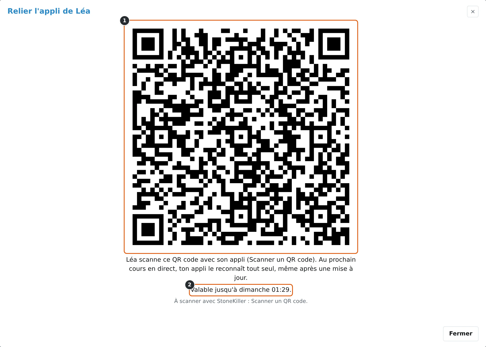
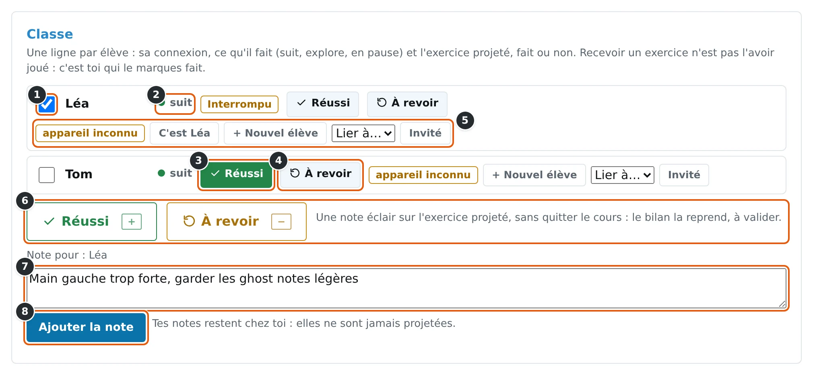

Ce qui aide
- Un appareil relié a sa clé StoneID : elle signe son arrivée au cours, un autre appareil ne peut pas prendre sa place. Elle ne quitte jamais l'appareil ; seule sa partie publique t'est envoyée.
- À un élève relié, Contenu personnel (en haut de sa fiche) donne des exercices chiffrés pour ses appareils : lui seul les ouvre, et il sait qu'ils viennent de toi. Sans appareil relié, l'appli propose de l'inviter.
- Un élève sans appli n'est pas à l'écart : il scanne le QR code du cours avec l'appareil photo, et tu le vois dans ta classe sous le nom qu'il a tapé. Pour un travail suivi, l'appli reste la bonne façon.
- Côté élève, ses profs reliés sont dans Réglages › Mes cours › Mes profs.
Pour aller plus loin
- Le lien entre le prof et l'élève : relier une fois, le Wi-Fi du cours, les fichiers et les QR codes.
- La fiche d'un élève : ses appareils, son contenu personnel, ses séances.
- Cours en direct : le panneau Classe pendant le cours.
Fiche 14Prof · Teach
Je donne un cours sans Wi-Fi
Le chemin
- Choisis ton Wi-Fi. Sur Android, l'appli Teach en crée un (Android 8 ou plus récent). Sinon, active le partage de connexion d'un téléphone (iPhone compris) ou branche un petit routeur de voyage, et connecte l'appareil du prof dessus : un ordinateur Windows sans connexion ne crée pas de Wi-Fi lui-même.
- Démarrer le cours, puis touche Wi-Fi du cours : le bouton dit le Wi-Fi retenu.
- Avec Teach sur Android : Ce téléphone crée le Wi-Fi, puis Créer un Wi-Fi avec ce téléphone ; accepte l'autorisation qu'Android demande. Avec un partage de connexion ou un routeur : Un Wi-Fi qui existe déjà, donne son Nom du Wi-Fi et son Mot de passe, puis Enregistrer.
- Les élèves scannent deux QR codes, un à la fois : ① Wi-Fi d'abord, puis ② Cours. Sous chaque QR code, ce qu'il fait et ce qu'il reste à faire ; un clic l'agrandit pour toute la classe.
- Avec l'appli sur Android, un seul scan suffit : Scanner le QR code (page Cours), sur le QR code ① ; l'appli rejoint le Wi-Fi (Android demande de confirmer), puis trouve le cours.
- Le Wi-Fi que tu indiques est gardé pour l'appli : aux cours suivants, les téléphones s'y reconnectent seuls (celui qu'Android crée change de nom à chaque fois). Oublier ce Wi-Fi le retire.
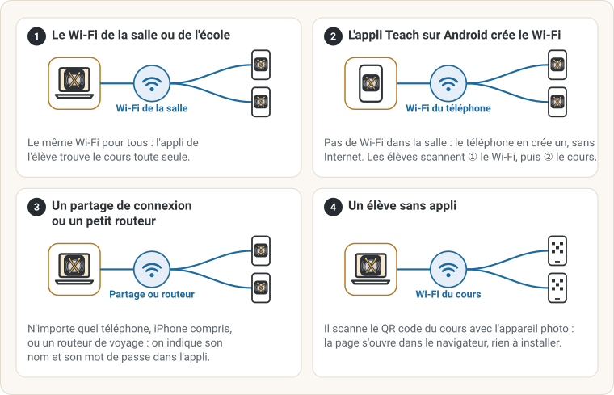
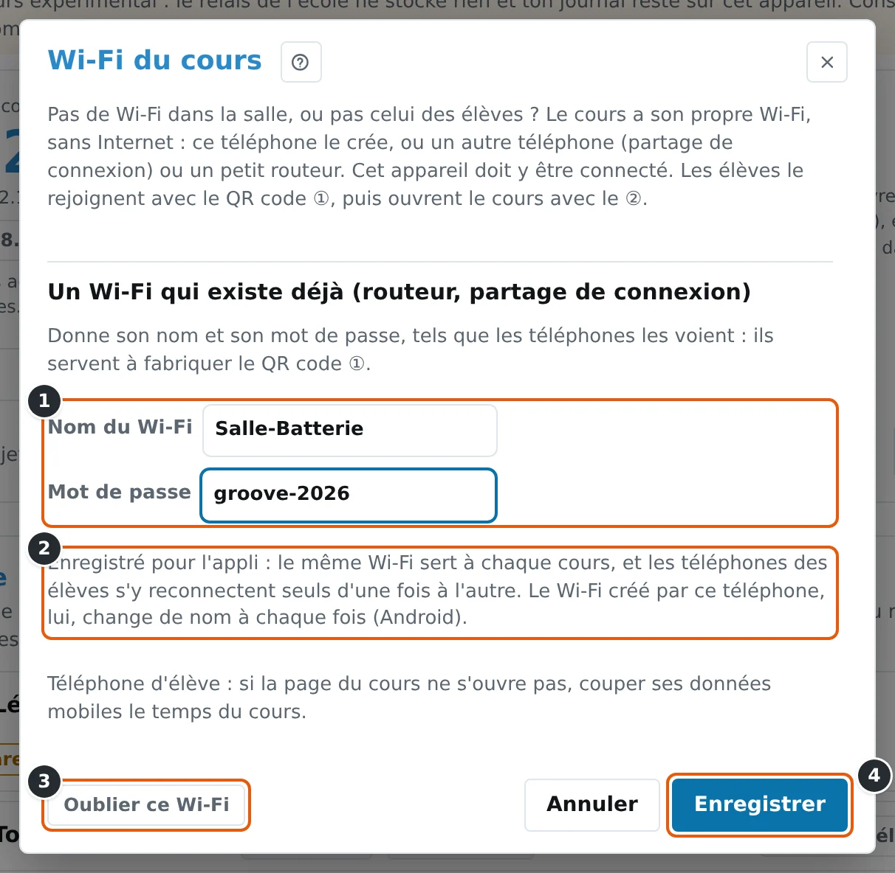
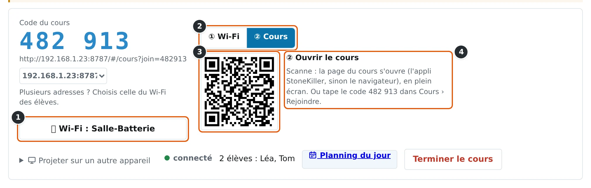
Ce qui aide
- Après le QR code ①, certains téléphones proposent seulement le réseau : ouvre alors les réglages Wi-Fi du téléphone et choisis le Wi-Fi du cours (le mot de passe est sous le QR code).
- Si la page du cours ne s'ouvre pas chez un élève, coupe ses données mobiles le temps du cours : certains Android passent par la 4G quand le Wi-Fi n'a pas Internet.
- Un téléphone n'accepte souvent que 5 à 10 appareils sur son Wi-Fi : pour une grande classe, prends un petit routeur de voyage.
- Les données mobiles et le Bluetooth ne conviennent pas pour un cours.
Pour aller plus loin
- Un cours sans Wi-Fi : le téléphone qui crée le Wi-Fi, le partage de connexion, l'élève sans appli.
- Cours en direct : démarrer, faire entrer les élèves, et si l'élève ne trouve pas le cours.
Fiche 15Prof · Teach
Je donne des devoirs, sur papier ou dans l'appli
Le chemin
- Pendant le cours, Projeter… un exercice, règle le tempo de départ et le tempo cible, puis Donner en devoir.
- Terminer le cours : les devoirs partent par le Wi-Fi du cours et entrent dans le Programme de chaque élève, avec les tempos choisis.
- Entre deux cours, la liste À travailler de la fiche de l'élève garde ses exercices : + Ajouter un exercice, ou → Élève depuis le reste de l'appli.
- Un exercice pour un seul élève : Contenu personnel, en haut de sa fiche, le chiffre pour ses appareils reliés (QR code ou fichier
.skpersonal). - L'élève note chaque exercice dans son Programme : la note règle le prochain rappel et le prochain tempo. Envoyer mon travail au prof te donne ensuite un QR code ou un fichier
.skreport; Recevoir son travail…, dans sa fiche, le lit, et tu confirmes avant que rien ne s'ajoute.
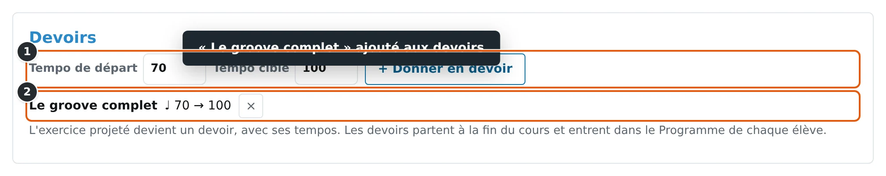
Sur papier
- Compose la feuille dans la File d'impression, puis la page Impression : Titre, Texte pour les consignes, partitions. Imprimer ouvre la boîte d'impression (ou PDF).
- QR code pour l'appli de l'élève : l'élève qui a l'appli scanne la feuille (Scanner un QR code), ses exercices rejoignent son programme. Scannée deux fois, rien n'est doublé.
- Cases pour l'élève : sous chaque exercice, une ligne à remplir au stylo (Jours travaillés, Mon tempo, la note). Avec le QR code, l'élève la prend en photo : Mes cases (photo) lit les cases.
- Sans QR code, la feuille se suffit : l'élève la rapporte remplie. Le papier ne chiffre rien : un contenu personnel passe par l'appli.
Ce qui aide
- Les deux chemins se mélangent : un QR code sur la feuille, des cases lues en photo.
- Une feuille se perd et se recopie mal, et ce qu'on y écrit n'atteint jamais l'appli : le QR code règle cela, sans obliger personne à avoir l'appli.
Pour aller plus loin
- Papier ou connexion : les circuits : l'appli ou le papier, information par information.
- Cours en direct : donner des devoirs, terminer le cours.
- Mes grooves, sauvegarde et impression : composer une feuille, le QR code de la feuille.
Fiche 16Prof · Teach
Je fais le bilan après le cours
Le chemin
- Terminer le cours : les devoirs partent chez les élèves et le Bilan s'ouvre. Plus tard le laisse dans le journal des cours, où le bouton Bilan le rouvre.
- Pour chaque élève et chaque exercice : vu, fait ou interrompu. L'appli part de ce qu'elle sait (Réussi marqué, pause pendant l'exercice) ; tu corriges, et le tempo atteint aussi.
- La note est proposée d'après le cours (Bon pour un exercice réussi, Moyen pour un « à revoir ») : change-la, ou choisis — pour n'en donner aucune. + Note en ajoute une.
- Coche les mises à jour proposées du registre : garder la séance dans sa fiche, mettre un exercice interrompu à travailler au prochain cours, retirer de À travailler un exercice fait, ajouter un élève qui n'y est pas.
- Mettre à jour le registre applique ce qui est coché, et rien d'autre. Un bilan validé reste modifiable : ✓ Bilan, dans le journal, le rouvre.
- Entre deux cours, Recevoir son travail…, dans la fiche de l'élève, lit ce qu'il a fait chez lui (QR code ou fichier
.skreport) ; tu confirmes avant que rien ne s'ajoute. - Sa liste À travailler est sa prochaine séance. Pour la setlist La séance, Passer à la prochaine séance repart du travail prévu.
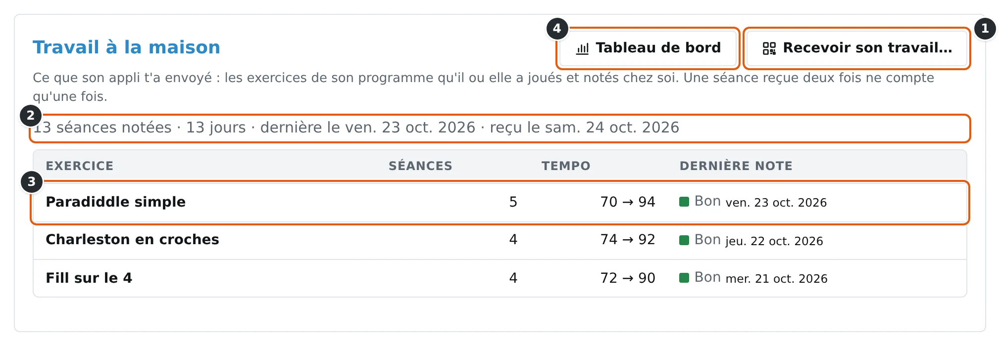
Sur papier
- Le compte rendu d'une séance s'imprime seul (Imprimer, dans la séance dépliée), avec les partitions données à travailler, pour l'élève ou ses parents.
- Imprimer, en haut de la fiche, prépare sa fiche, Ses leçons ou l'Aperçu de l'année ; dans la liste des élèves, Imprimer sort le registre en tableau.
- Une feuille donnée avec Cases pour l'élève revient remplie : tu vois sa semaine d'un coup d'œil.
Ce qui aide
- Tes notes écrites dans le panneau Classe ne sont jamais projetées : tu les retrouves dans le bilan.
- Les évaluations comptent ensuite dans les progrès de l'élève, par compétence (onglet Compétences de sa fiche).
- Chez l'élève, les devoirs sont dans son Programme et le cours dans son Journal des cours.
Pour aller plus loin
- Après le cours : le bilan, le registre à jour, le travail de l'élève, la séance suivante.
- La fiche d'un élève : ses séances, ses compétences, son travail à la maison.
Fiche 17Élève · StoneKiller
Je construis ma séance avec une routine
Le chemin
- Ouvre la page Routines (catégorie Exercices), puis Nouvelle routine : un nom pour elle, un nom pour son premier nœud. Depuis Ma setlist en fait une avec les exercices cochés de Ma setlist.
- Un nœud est une suite d'étapes. Ajoute-les : Exercice (une leçon, un groove, une étude de chanson), Métronome (Réglages actuels du métronome ou un de Mes préréglages) ou Consigne (un texte et une durée). Chaque étape a sa Durée, son Tempo et sa consigne, affichée en grand pendant qu'elle joue.
- Pour choisir le point fort du jour, ajoute une Branche après un nœud (« les mains » ou « les pieds »), et Rejoindre… les ramène sur une suite commune, un « Retour au calme ». Une routine va toujours vers l'avant : pas de boucle sans fin.
- Jouer la lance : la consigne s'affiche en grand, lisible depuis la batterie. ▶ lance l'étape, ■ la met en pause ; Étape suivante, Étape précédente et Fin du nœud restent au même endroit. Avec Enchaîner tout seul, la suivante démarre seule.
- Après chaque nœud, le récapitulatif montre ce que tu as fait (tempo, temps, passages) et combien de fois tu as fait ce nœud. Choisis la suite : Terminer la routine, Continuer, une branche, ou Refaire ce nœud.
- Ton chemin montre à la fin les nœuds suivis et le temps total ; Rejouer relance. Ajouter au programme met la routine dans ton Programme : elle revient au bon moment, et tu la notes à la fin.


Ce qui aide
- Chaque nœud fini est gardé aussitôt : si tu arrêtes en route ou quittes la page, ce qui est fait compte quand même.
- Pause entre deux étapes laisse un décompte de quelques secondes pour changer de position.
- Sur téléphone, un toucher ouvre le nœud en plein écran ; les flèches rangent les étapes, sans glisser-déposer.
- Les routines et leurs séances sont dans la Sauvegarde complète.
Pour aller plus loin
- Les routines : les mots d'une routine, l'éditeur, jouer, après chaque nœud.
- Le programme d'entraînement : les rappels, les notes, ce que fait chaque note.